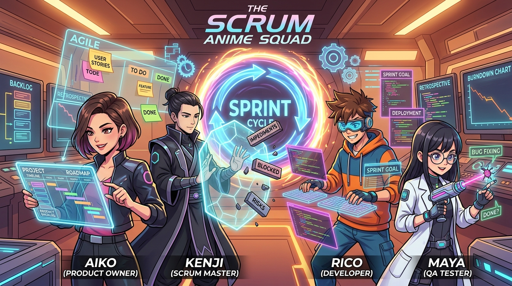
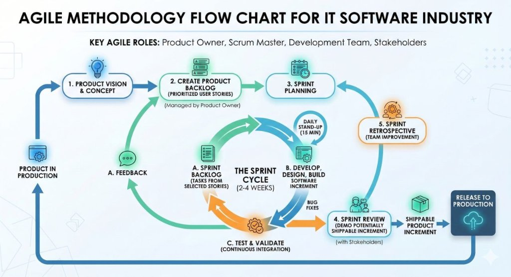

Olvida los libros aburridos. Acompaña al Scrum Anime Squad en una expedición interactiva donde descubrirás por qué construir software de calidad es como forjar un barco legendario en viajes de dos semanas.

¿Por qué la cascada tradicional fracasa en problemas complejos?
• Trabajas 6 meses a ciegas sin ver el software funcionando.
• Si el cliente cambia de opinión en el mes 4, ¡es una catástrofe contractual!
• Las pruebas de calidad se dejan para la última semana. Cuando aparecen 200 bugs críticos, nadie duerme y el sistema colapsa en el lanzamiento.
• En la semana 2 entregamos un cupcake delicioso y real (Incremento).
• Los novios lo prueban: '¡Mmm, está delicioso, pero agreguemos más chocolate!'.
• Cada 2 semanas horneamos un piso probado, sólido y delicioso. ¡La calidad se asegura desde el primer bocado!
Cómo el equipo toma decisiones basadas en hechos reales y no en suposiciones
"Nada de ocultar bugs bajo la alfombra ni decir 'casi está listo' cuando no compila. Todos ven el tablero y la realidad del proyecto."
"Revisamos frecuentemente el código, las pruebas y los artefactos para detectar desvíos antes de que sea un problema grave."
"Si una prueba falla o la arquitectura no escala, ajustamos el plan y el proceso de inmediato en lugar de insistir en el error."
¡Sin jefes autoritarios ni silos departamentales! Un equipo unido por un objetivo común
"Yo decido QUÉ se construye y en qué orden de valor. Mi brújula es el Product Goal y cuido el Product Backlog."
"¡No soy el jefe de nadie! Mi misión es eliminar bloqueos, proteger al equipo de distracciones y asegurar que vivan los valores ágiles."
"Nosotros decidimos CÓMO se construye técnicamente, cuánto trabajo cabe en el Sprint y transformamos ideas en código funcional."
"¡En Scrum los evaluadores estamos integrados desde el día uno! Diseño pruebas automatizadas para que ningún bug pase a producción."
"¡Jejeje! Si no ejecutan pruebas unitarias ni revisan el código, haré que el sistema de matrículas colapse a las 8 de la mañana."
Así viaja nuestro escuadrón en cada ciclo. Pasa el cursor y haz clic para interactuar con las paradas del mapa:
Donde Aiko reúne todas las peticiones, quejas y deseos de los usuarios en historias de usuario ordenadas.
El escuadrón pacta el Sprint Goal y escoge las provisiones exactas de trabajo para 2 semanas.
Todos los días de pie durante 15 minutos: ¿Hacia dónde marchamos hoy? ¿Hay algún monstruo bloqueando el paso?
Maya y Rico aplican pruebas unitarias, linters y revisión de código. ¡Nada sale sin el sello de aprobación!
Demostración del software funcionando ante el Rey (los stakeholders) y fiesta de celebración.
Reflexión del clan: ¿Qué hicimos bien? ¿Qué herramientas podemos mejorar para el próximo viaje?
Buggy el Monstruito está intentando sabotear el módulo de matrículas. Haz clic en cada uno de los 5 escudos de calidad para activar las defensas y derrotarlo:
¿Qué harías tú como miembro del Scrum Squad? Pon a prueba tu instinto
El mapa completo de la industria del software explicado paso a paso por los personajes

Aiko define el propósito del software: resolver las matrículas de la universidad sin que los alumnos hagan colas físicas.
Lista ordenada de historias de usuario. El Product Owner decide cuáles tienen mayor prioridad de valor.
El equipo se reúne al inicio de las 2 semanas, pacta el Sprint Goal y descompone las tareas en el Sprint Backlog.
Desarrollo + Standup diario de 15 min + Testing continuo y resolución de bugs sin pausa.
Demostración en vivo del software funcionando a los stakeholders para obtener retroalimentación real.
El incremento validado se libera a producción. El feedback de los alumnos regresa al Backlog para nuevas mejoras.
El equipo se reúne para mejorar sus procesos, herramientas y dinámicas de trabajo antes de iniciar el siguiente Sprint.